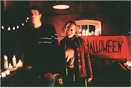

The legacy of the horror movie sequel was nicely summed up in Scream by Jaime Kennedy’s film geek character: more bodies, more elaborate deaths, more gore. It’s nice to see that Steve Miner, Kevin Williamson, Jamie Lee Curtis and company have taken the high road in Halloween H20. They know their conventions, but rather than take the self-aware Scream route, H20 returns to an almost slasher film purity: innocent horror movie fun , a lean, sharp thrill ride that delivers scares rather than gore. It’s the best Halloweenfilm since the original and the smartest horror film to come along in quite some time.
Jamie Lee Curtis is Keri Tate, headmistress of a posh California private school, but Keri Tate is Laurie Strode, the survivor of the Haddonfield, Illinois, Halloween massacre twenty years ago. She faked her death and gave herself a new identity and a new life. Twenty years later her horror still lives on. After waking up from a particularly ghastly nightmare (Michael Myers trapping her in a closet) we find out the terror doesn’t end at dawn. She sees him everywhere: reflected in mirrors, lurking in the distance, stepping out from around corners, and in one particularly effective scene walking up the street right at her, refusing to go away even as she closes her eyes to will the apparition away. A single mom with a 17 year old sick to death of her "unreasonable" fears she’s turned to the bottle, a secret alcoholic trying to lose herself in a drunken haze.
But I get ahead of myself. The film begins with Nurse Marion Chambers (Nancy Stephens reprising her role from the first two films) returning home from work to find her house broken into. In the office is a wall full of clippings and notes on the dreaded Haddonfield murders twenty years before, along with a newspaper article on Laurie’s death in a car accident (the only reference to a Halloweenoutside the first two -- in number 4that death is reported). The house belonged to Dr. Loomis (the late Donald Pleasance, whose voice returns in a wonderful tribute over the opening credits), the fearless psychiatrist that chased Michael through five films (three of those don’t count, of course, and his files have been ransacked -- including, we suspect, the true story of Laurie’s "death."
Well, no surprise the burglar is Michael and Miner uses the sequence to tease us -- which is just what it feels like, a playful bit of jest as expectations are built higher and higher while we wait for the knife to fall. For the next half hour or so the script resorts to the standard rules of slasher movie set-up: establish potential victims, lay in the necessary number of coincidences to leave them sitting ducks (in this case a weekend long field trip which clears out the campus -- but for a few key stragglers -- on Halloween), and beat the audience over the head with false scares and cheap shocks.
The kids aren’t any worse than similar movie meat -- the screenplay doesn’t really give them all that much to work with -- but it’s Jamie Lee Curtis that gives this whole set-up its punch. The legacy of Laurie has provided a creepy real world dimension to the horror fantasy, an emotionally scarred, psychically devastated survivor for whom the nightmare never ended. Curtis invests Laurie with cutting humor and a hollow exuberance, putting on a good show for her son John (Josh Hartnell), lover Will (Adam Arkin), and nosy "let me be maternal" secretary Norma (a cute but brief tongue-in-cheek appearance by real life mom and Psycho scream queen Janet Leigh).

There’s enough in-jokes and references to keep avid thriller junkies entertained (from clips of Plan 9 From Outer Space and Scream II to Leigh’s exit in her Psycho-mobile Ford Fairlane) and they zip by quickly enough not to distract the uninitiated. But once Michael hits campus the film discards these asides to begin its slow rollercoaster climb to an all new terror train. Miner doesn’t just return to the classic mode, he brings back the wide, wide Panavision frame that Carpenter used so well in Halloween. Michael doesn’t leap out of closets or hide conveniently off screen for some cheap shock effect, he’s always in the frame well before the kill shot, whipping around corners like a Tasmanian Devil, striding up on his victims with the tenacity of the Mummy and the pace of a race walker. Shooting down hallways that cut off options, creating a sense of doom with walls and ceilings that seem to close in on the protagonists, Miner uses the widescreen to create a claustrophobic atmosphere.Holding it all together is the family reunion. In the film’s best moment brother and sister stare at one another through the thick glass of a locked door. The fear seems to drain from Laurie’s eyes for a moment replaced melancholy, while Michael, with his black puppy dog eyes under a ghastly death-white mask, shows no hate or anger or anything we’d associate with a killer. He becomes even more enigmatic and terrifying because there’s nothing there to fathom. And as the stalking continues Laurie becomes a rare horror heroine that comes to expect the unexpected. Having seen Michael rise from the dead before she’s not about to turn her back now.
It’s got its problems, sure. The teenage stuff feels obligatory and still married to one cliché that should have been dropped long ago: sexually active kids watch out, the boogeyman is going to punish you! More than an enigma, Michael is preternaturally brilliant, traversing the terrain of the California campus like he designed it and cutting off phone and electric sources like a vindictive lineman. But after a rather obligatory set-up, H20 turns into sleek, lean thrill ride which, at only 82 minutes, it never overstays its welcome. Instead of victims paralyzed by inaction we’re given smart, capable kids who have the gumption to stay out of basements and dead end hallways and fight back. At one point teen cutie Molly (Dawson’s Creek’s Michelle Williams) becomes almost incoherent with her crying, but only after she’s dared to brain Michael with a rock to rescue her boyfriend. She’s earned her respite -- hell, it’s the idea that she’s over it that allows her the space to fall apart.
H20 delivers a smart, slick slasher movie that treats both its characters and audience with a modicum of respect and without the self-consciousness of Scream. Shakespeare it ain’t, but it works for me.